Actualités
■ 18 juin 2025 : la commune de Salles rejette l'implantation d'éoliennes, d'agrivoltaïsme et de méthaniseurs
Bonjour à toutes et à tous, Bonne nouvelle ! Le conseil municipal du 18 juin 2025 de Salles a voté au sujet des « zones d'accélération des énergies renouvelables » : – il valide la possibilité d'implantation photovoltaïque en toiture, sur les hangars agricoles, dans les friches ; – il rejette l'implantation d'éoliennes, d'agrivoltaïsme, de méthaniseurs. Cette décision doit encore être communiquée à la préfecture. Notre mobilisation pendant pratiquement 3 ans est en grande partie à l'origine de ce vote Merci à vous tous !!! … mais l'association doit encore rester attentive car la décision finale reviendra au préfet. Cordialement, Le bureau de l'association
■ 22 janvier 2025 : conférence à Salles pour échanger autour du photovoltaïque individuel ou collectif
Message de Coop de Só.
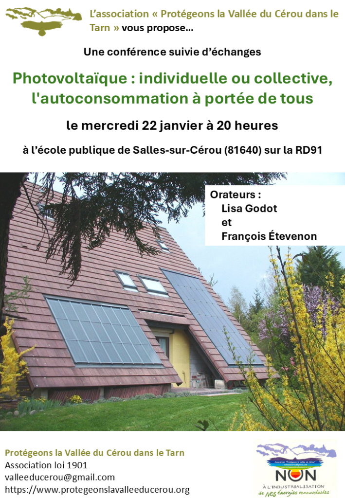
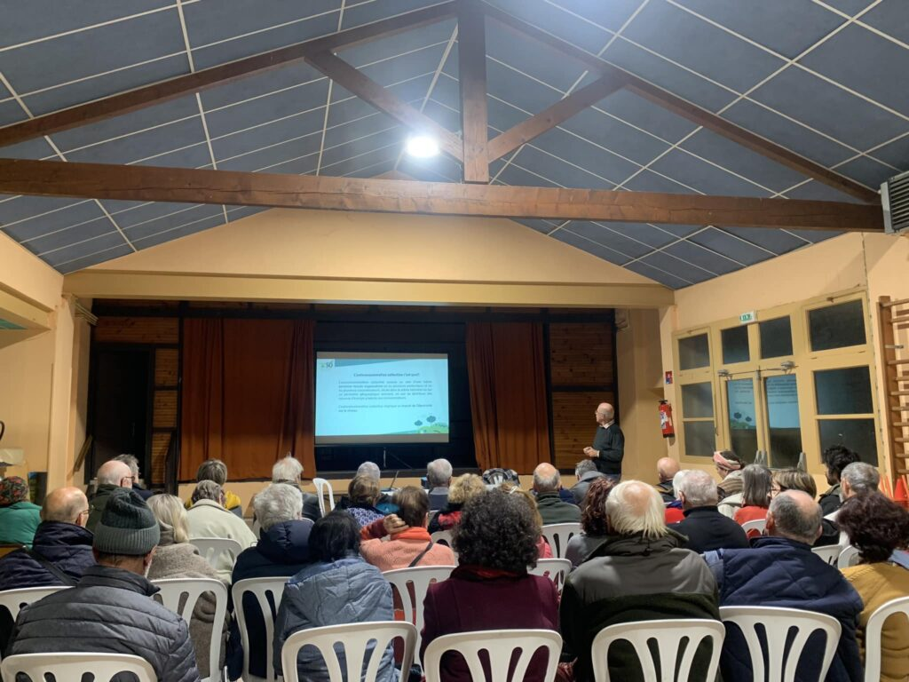
Télécharger le flyer (PDF)
■ 4 janvier 2025 : « L'agrivoltaïsme : nouvel eldorado des producteurs d'électricité, miroir aux alouettes pour les agriculteurs » … une enquête de France Inter (36 minutes)
Écouter l'enquête sur France Inter
■ Décembre 2024 : notre association adopte sa charte
Consulter la charte de l'association
■ 20 novembre 2024 : assemblée générale notre association « Protégeons la Vallée du Cérou dans le Tarn »
Au-delà des classiques approbations de bilan et renouvellement de bureau, cette AG très dynamique a été l'occasion de discuter du positionnement stratégique de l'association et de faire le point sur les actions récentes et les nouvelles initiatives à prendre.
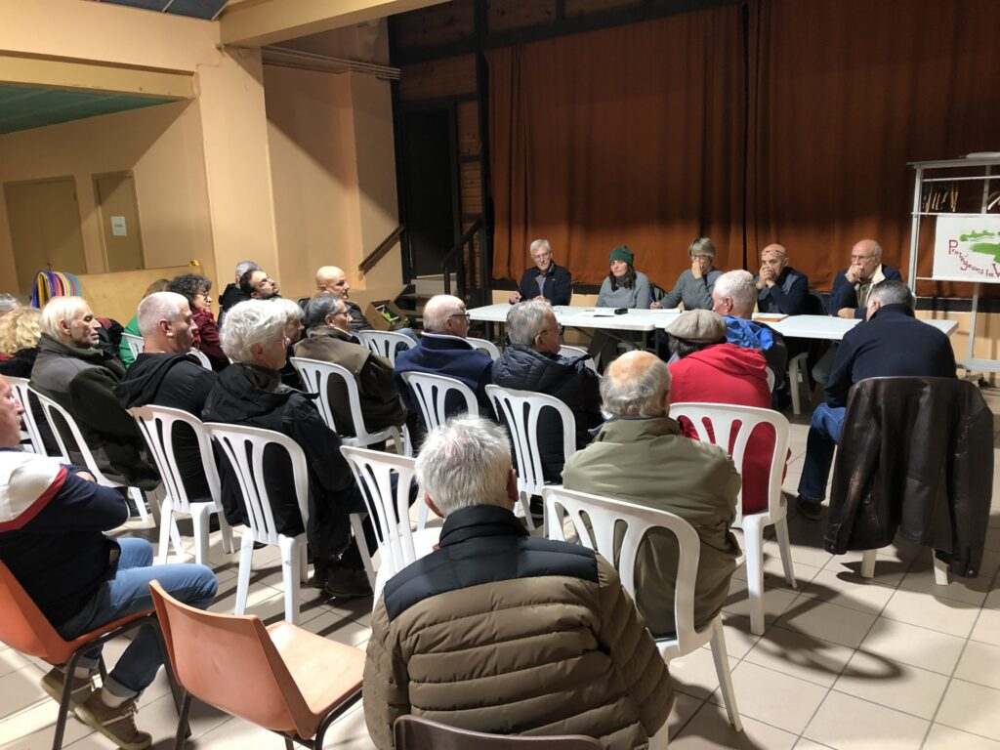
■ 11 juillet 2024 : l'association rencontre le président de la Communauté de Communes du Cordais et du Causse (4C) pour se présenter et faire valoir ses préoccupations
Consulter le mémorandum (PDF)
■ Juillet 2024 : fin de la consultation organisée à Salles-sur-Cérou par la mairie : 86% des habitants s'étant prononcés sont défavorables à l'installation d'éoliennes sur la commune.
Consulter les résultats (PDF)
■ Une marche à travers la Vallée organisée par l'association le 2 juin 2024… un franc succès dans la convivialité !
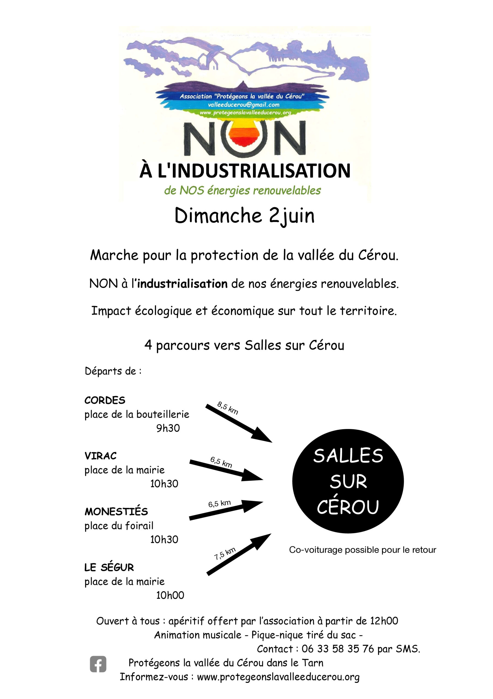
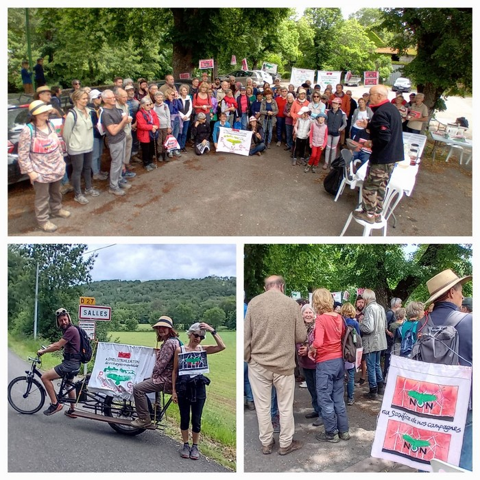
■ Antoine Triboulet, ingénieur en transition, aux Cabannes… une conférence organisée par l'association (24 mai 2024)
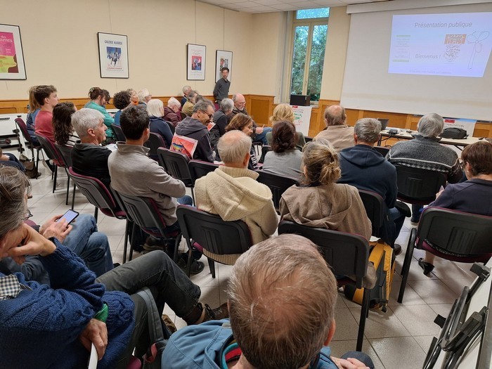
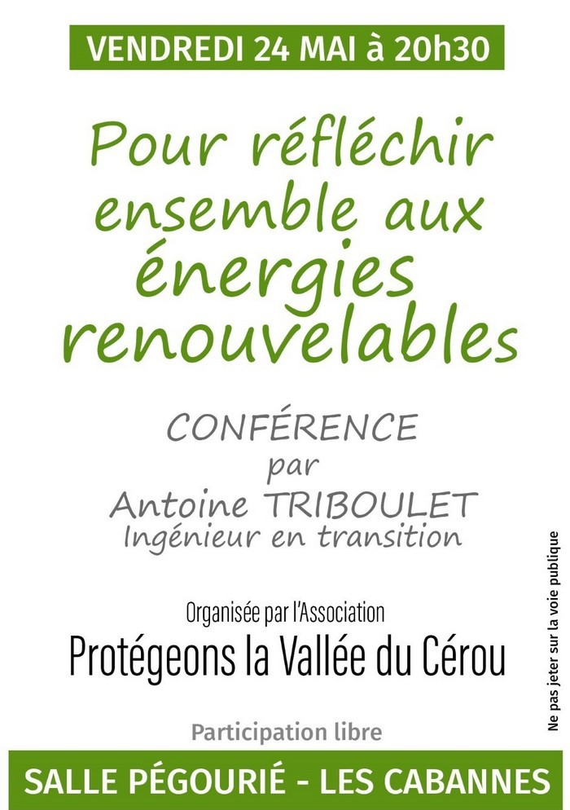
■ Mise à disposition de flyers sur la page « flyers » du site
Consulter les flyers
■ Dans le Finistère, un promoteur éolien condamné à dédommager des riverains pour nuisance et dépréciation immobilière (28 mars 2024)
Lire l'article
■ Les panneaux fleurissent dans les champs (9 mars 2024)
Un simple exemple parmi tant d'autres :
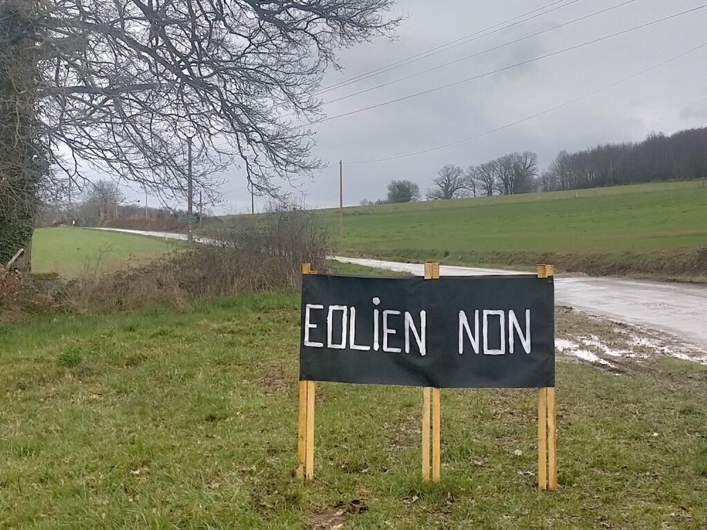
■ Décision du Conseil d'État (8 mars 2024)
Le 8 mars 2024, le Conseil d'État a relevé que les arrêtés ministériels de mesure du bruit n'ont pas fait l'objet d'une évaluation environnementale ce qui constitue une violation de la loi. Il a également souligné que les décisions d'approbation du protocole acoustique n'ont pas été soumises à la participation du public, enfreignant ainsi les principes de participation et de transparence. Cette décision fait suite à de nombreuses plaintes de riverains de champs d'éoliennes sur la nuisance sonore.
Consulter la décision sur le site du Conseil d'État
Télécharger la décision (PDF)
■ La Fédération Environnement Durable et 10 autres associations attaquent le décret RIIPM devant le Conseil d'État (4 mars 2024)
La Fédération Environnement Durable (FED) et 10 autres associations de protection de l'environnement ont déposé un recours devant le Conseil d'État pour contester le décret gouvernemental RIIPM du 30 décembre 2023. Ce décret vise à établir que les projets de production d'énergies renouvelables soient considérés d'intérêt public majeur, y compris les éoliennes terrestres dont le développement suscite de vives controverses. Les requérantes estiment que le décret est entaché d'irrégularités sur plusieurs points. Elles pointent notamment du doigt l'absence d'évaluation environnementale préalable, le manque de transparence dans la consultation publique et l'ignorance d'avis défavorables émis par des instances compétentes.
Lire l'article
■ Réunion de l'ensemble des membres de l'association (1er mars 2024)
La réunion a permis de faire le point tous ensemble, et définir collectivement les actions à mener à partir de maintenant.
■ Création de notre page Facebook (14 février 2024)
Consulter notre page Facebook

■ La commune de Livers-Cazelles a délibéré contre l'éolien sur son territoire (séance du 2 février 2024)
Consulter la délibération (PDF)
■ Les habitants en colère (janvier 2024)
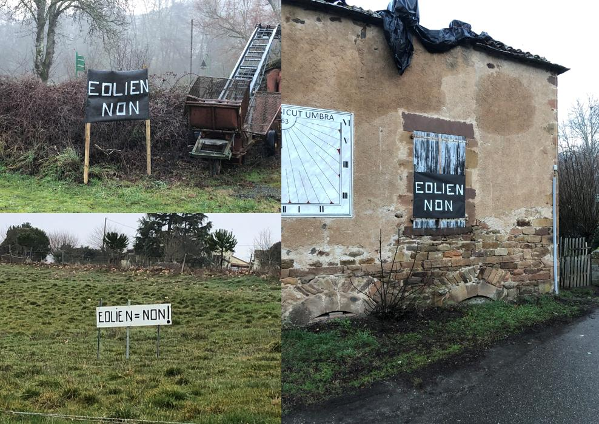
■ La réunion publique du 27 janvier 2024 dans la commune de Virac laisse augurer d'un refus de l'éolien sur le territoire communal.
À confirmer bientôt par un vote du Conseil municipal…
■ L'association interviewée le 18 janvier 2024 sur CFM Radio
Écouter l'interview sur CFM Radio
■ Le 15 janvier 2024, le conseil municipal de la commune du Ségur délibère contre les éoliennes.
Après la réunion publique du 9 janvier 2024, pendant laquelle la quasi-unanimité des participants avait fait part de son opposition, la commune du Ségur a délibéré le 15 janvier 2024 contre les éoliennes sur son territoire, ou plus précisément contre des zones d'accélération pour des projets éoliens (au sens de la loi APER). L'image ci-dessous, extraite de la délibération, est parlante :
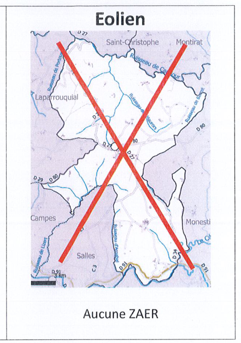
Consulter la délibération (PDF)
■ La commune des Cabannes ne retient pas les éoliennes dans ses choix d'énergies renouvelables (27 novembre 2023)
Consulter le procès-verbal (PDF)
■ L'association est créée en octobre-novembre 2023
■ Le collectif qui a précédé l'association organise une réunion publique à Salles le 30 août 2023
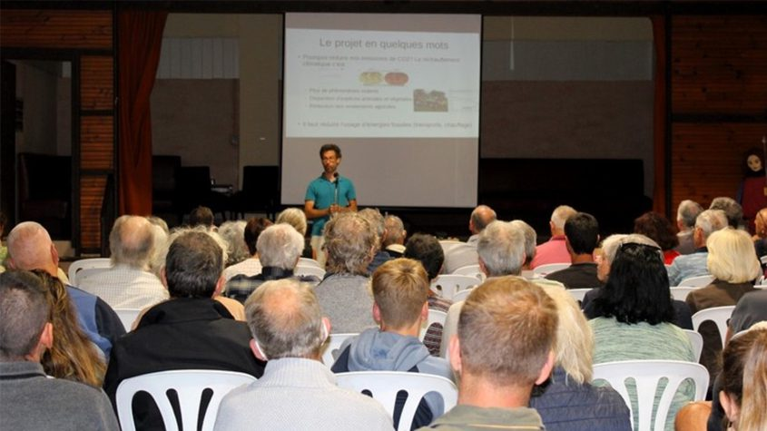